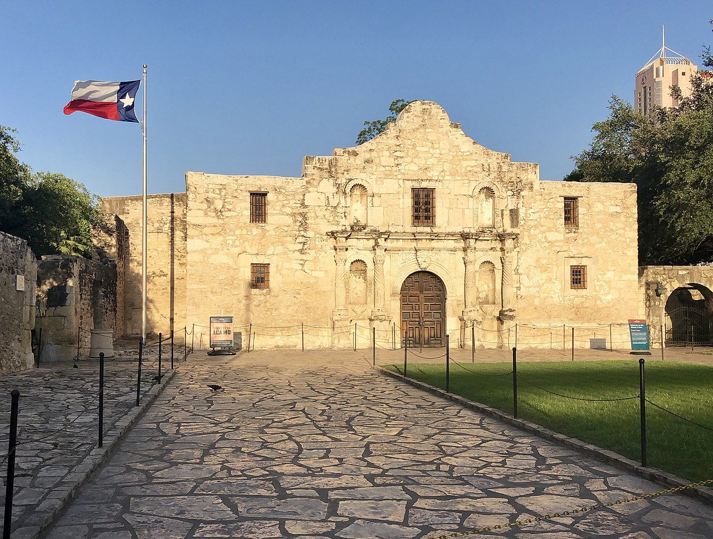

🌟 Chapter 1: Introduction to Texas 🤠
Explore the rich and diverse history of Texas from Six Flags to Modern Times
🎓 Welcome, Trailblazer!
Enter your name to begin your Texas history adventure:
Six Flags Over Texas
Learn about the six nations that have had sovereignty over Texas territory.
Independence for Texas
Discover why American settlers sought independence from Mexico.
The Mexican-American War
Explore the causes and outcomes of the war from 1846-1848.
Texas in the Civil War
Understand Texas' role in the American Civil War and its aftermath.
Reconstruction Era
Learn about Texas' path to rejoining the Union after the Civil War.
Governor E.J. Davis
Discover the controversial Reconstruction-era Republican governor.
The Texas Oil Boom
Explore how oil transformed Texas into an economic powerhouse.
Texas Demographics
Learn about the diverse population that makes Texas unique.
State Political Culture
Understand Elazar's theory of political culture and how it applies to Texas.
Six Flags Over Texas
Texas has a rich and diverse history. Understanding that history helps explain why contemporary Texas is the way it is. This chapter explores a tiny piece of that history.
+15 points! 🎉 You've discovered an important insight!
The six flags represent the complex and layered history of Texas. Each nation left its mark on Texas culture, law, and identity. From Spanish colonial rule to French exploration, Mexican governance, independence as a republic, Confederate involvement, and finally American statehood, Texas's unique character emerges from this multicultural heritage.
The image of six flags flying over the Texas State History Museum in Austin serves as a powerful reminder of this heritage. Each flag represents a distinct era in Texas history, complete with its own laws, customs, and cultural contributions.
+15 points! 🌟 Great discovery!
Understanding Texas history helps explain why contemporary Texas is the way it is. The state's legal traditions, cultural diversity, and political attitudes all trace back to these six periods of governance. For instance, Texas property law still reflects Spanish and Mexican influences, while its independent spirit connects to its decade as a republic.
Independence for Texas
🎯 Learning Objectives
- Explain why American settlers in Texas sought independence from Mexico
- Discuss early attempts to make Texas independent of Mexico
- Describe the relationship between Anglo-Americans and Tejanos in Texas before and after independence
As the incursions of the earlier filibusters into Texas demonstrated, American expansionists had desired this area of Spain's empire in America for many years. After the 1819 Adams-Onís treaty established the boundary between Mexico and the United States, more American expansionists began to move into the northern portion of Mexico's province of Coahuila y Texas. Following Mexico's independence from Spain in 1821, American settlers immigrated to Texas in even larger numbers, intent on taking the land from the new and vulnerable Mexican nation in order to create a new American slave state.
To increase the non-Indian population in Texas and provide a buffer zone between its hostile tribes and the rest of Mexico, Spain began to recruit empresarios. Moses Austin, a once-prosperous entrepreneur reduced to poverty by the Panic of 1819, requested permission to settle three hundred English-speaking American residents in Texas. Spain agreed on the condition that the resettled people convert to Roman Catholicism.

+15 points! 🎉 Excellent exploration!
On his deathbed in 1821, Moses Austin asked his son Stephen to carry out his plans, and Mexico, which had won independence from Spain the same year, allowed Stephen to take control of his father's grant. Like Spain, Mexico also wished to encourage settlement in the state of Coahuila y Texas and passed colonization laws to encourage immigration. Thousands of Americans, primarily from slave states, flocked to Texas and quickly came to outnumber the Tejanos, the Mexican residents of the region.
Many Americans who migrated to Texas at the invitation of the Mexican government did not completely shed their identity or loyalty to the United States. They brought American traditions and expectations with them (including, for many, the right to own slaves). For instance, the majority of these new settlers were Protestant, and though they were not required to attend the Catholic mass, Mexico's prohibition on the public practice of other religions upset them and they routinely ignored it.
+15 points! 🌟 Great discovery!
Accustomed to representative democracy, jury trials, and the defendant's right to appear before a judge, the Anglo-American settlers in Texas disliked the Mexican legal system, which provided for an initial hearing by an alcalde—an administrator who often combined the duties of mayor, judge, and law enforcement officer. Their greatest source of discontent was Mexico's 1829 abolition of slavery. Most American settlers were from southern states, and many had brought slaves with them.
The growing presence of American settlers in Texas, their reluctance to abide by Mexican law, and their desire for independence caused the Mexican government to grow wary. In 1830, it forbade future U.S. immigration and increased its military presence in Texas. Settlers continued to stream illegally across the long border; by 1835, after immigration resumed, there were twenty thousand Anglo-Americans in Texas.
+15 points! 🏛️ Remember the Alamo!
Mexico had no intention of losing its northern province. Santa Anna and his army of four thousand had besieged San Antonio in February 1836. Hopelessly outnumbered, its two hundred defenders, under Travis, fought fiercely from their refuge in an old mission known as the Alamo. After ten days, however, the mission was taken and all but a few of the defenders were dead, including Travis and James Bowie, the famed frontiersman. A few male survivors, possibly including Davy Crockett, were led outside the walls and executed.
Although hungry for revenge, the Texas forces under Sam Houston nevertheless withdrew across Texas, gathering recruits as they went. Coming upon Santa Anna's encampment on the banks of San Jacinto River on April 21, 1836, they waited as the Mexican troops settled for an afternoon nap. Assured by Houston that "Victory is certain!" and told to "Trust in God and fear not!" the seven hundred men descended on a sleeping force nearly twice their number with cries of "Remember the Alamo!" Within fifteen minutes the Battle of San Jacinto was over.
The Mexican-American War, 1846-1848
🎯 Learning Objectives
- Identify the causes of the Mexican-American War
- Describe the outcomes of the war in 1848, especially the Mexican Cession
Tensions between the United States and Mexico rapidly deteriorated in the 1840s as American expansionists eagerly eyed Mexican land to the west, including the lush northern Mexican province of California. Indeed, in 1842, a U.S. naval fleet, incorrectly believing war had broken out, seized Monterey, California, a part of Mexico. Monterey was returned the next day, but the episode only added to the uneasiness with which Mexico viewed its northern neighbor.

+15 points! 🎉 Political strategy uncovered!
A fervent belief in expansion gripped the United States in the 1840s. In this climate of opinion, voters in 1844 elected James K. Polk, a slaveholder from Tennessee, because he vowed to annex Texas as a new slave state and take Oregon. President Polk—whose campaign slogan had been "Fifty-four forty or fight!"—asserted the United States' right to gain full control of Oregon Country. After diplomatic negotiations with Great Britain, the land was divided at 49° latitude.
Expansionistic fervor propelled the United States to war against Mexico in 1846. The United States had long argued that the Rio Grande was the border between Mexico and the United States, and at the end of the Texas war for independence Santa Anna had been pressured to agree. Mexico, however, refused to be bound by Santa Anna's promises and insisted the border lay farther north, at the Nueces River.
+15 points! ⚔️ The first shots!
In January 1846, the U.S. force that was ordered to the banks of the Rio Grande to build a fort on the "American" side encountered a Mexican cavalry unit on patrol. Shots rang out, and sixteen U.S. soldiers were killed or wounded. Angrily declaring that Mexico "has invaded our territory and shed American blood upon American soil," President Polk demanded the United States declare war on Mexico. On May 12, Congress obliged.
U.S. military strategy had three main objectives: 1) Take control of northern Mexico, including New Mexico; 2) seize California; and 3) capture Mexico City. General Zachary Taylor and his Army of the Center were assigned to accomplish the first goal, and with superior weapons they soon captured the Mexican city of Monterrey. Taylor quickly became a hero in the eyes of the American people.
+15 points! 📜 Historic treaty revealed!
The Treaty of Guadalupe Hidalgo, signed in February 1848, was a triumph for American expansionism under which Mexico ceded nearly half its land to the United States. The Mexican Cession included the current states of California, New Mexico, Arizona, Nevada, Utah, and portions of Colorado and Wyoming. Mexico also recognized the Rio Grande as the border with the United States. In exchange, the United States agreed to assume $3.35 million worth of Mexican debts and paid Mexico $15 million for its land.
Texas in the American Civil War
🎯 Learning Objectives
- Understand Texas' role in the American Civil War
- Understand the influence the American Civil War had on Texas
- Understand the continuing influence the American Civil War has on contemporary Texas
The U.S. state of Texas declared its secession from the United States of America on February 1, 1861, and joined the Confederate States on March 2, 1861, after it replaced its governor, Sam Houston, when he refused to take an oath of allegiance to the Confederacy. As with those of other States, the Declaration was not recognized by the United States government at Washington.
+15 points! 📜 Historical document revealed!
Texas issued a declaration of causes spelling out the rationale for secession. The document cited solidarity with "sister slave-holding States," the U.S. government's inability to prevent Indian attacks and border raids, and accused northern politicians and abolitionists of committing outrages. The bulk of the document offered justifications for slavery, stating: "We hold as undeniable truths that the governments of the various States... were established exclusively by the white race, for themselves and their posterity."
At this time, African Americans comprised 30 percent of the state's population, and they were overwhelmingly enslaved. According to one Texan, Caleb Cutwell, keeping them enslaved was the primary goal: "Independence without slavery, would be valueless... The South without slavery would not be worth a mess of pottage."
+15 points! 🎭 A leader's defiance!
Governor Sam Houston accepted secession but asserted that the Convention had no power to link the state with the new Southern Confederacy. Instead, he urged that Texas revert to its former status as an independent republic and stay neutral. Houston took his seat on March 16, the date state officials were scheduled to take an oath of allegiance to the Confederacy. He remained silent as his name was called out three times and, after failing to respond, the office of governor was declared vacant and Houston was deposed from office.
Over 70,000 Texans served in the Confederate army and Texas regiments fought in every major battle throughout the war. The state furnished the Confederacy with 45 regiments of cavalry, 23 regiments of infantry, 12 battalions of cavalry, 4 battalions of infantry, 5 regiments of heavy artillery, and 30 batteries of light artillery.
+15 points! 🕊️ Divided loyalties revealed!
Despite the prevailing view of the vast majority of the state's politicians, there were a significant number of Texans who opposed secession—about 25% favored remaining in the Union. The largest concentration of anti-secession sentiment was among the German Texan population in the Texas Hill Country and some North Texas counties. Many Unionists were executed. In August 1862, Confederate soldiers attacked German Texans headed out of state in what became known as the Nueces massacre.
Reconstruction
During the American Civil War, Texas had joined the Confederate States. The Confederacy was defeated, and U.S. Army soldiers arrived in Texas on June 19, 1865 to take possession of the state, restore order, and enforce the emancipation of slaves. The date is now commemorated as the holiday Juneteenth. On June 25, troops raised the American flag in Austin, the state capital.
+15 points! 🏛️ Reconstruction governance!
U.S. President Andrew Johnson appointed Union General Andrew J. Hamilton, a prominent politician before the war, as the provisional governor on June 17. He granted amnesty to ex-Confederates if they promised to support the Union in the future, appointing some to office. Angry returning veterans seized state property and Texas went through a period of extensive violence and disorder.
On March 30, 1870, the United States Congress readmitted Texas into the Union, although Texas did not meet all the formal requirements for readmission. Like other Southern states, by the late 1870s white Democrats regained control, often with a mix of intimidation and terrorism by paramilitary groups operating for the Democratic Party.
+15 points! 🗳️ Voting rights revealed!
Democrats passed a new constitution in 1876 that segregated schools and established a poll tax to support them, but it was not originally required for voting. In 1901 the Democratic-dominated legislature imposed a poll tax as a requirement for voting, and succeeded in disfranchising most blacks. The number of voters decreased from 100,000 in the 1890s to 5,000 by 1906.
Governor E.J. Davis
Edmund Jackson Davis (October 2, 1827 – February 24, 1883) was an American lawyer, soldier, and politician. He was a Southern Unionist and a general in the Union Army in the American Civil War. He also served for one term from 1870 to 1874 as the 14th Governor of Texas.
+15 points! ⚔️ Union service revealed!
In early 1861, Edmund Davis supported Governor Sam Houston in their mutual stand against secession. Davis refused to take an oath of allegiance to the Confederate States of America and was removed from his judgeship. He fled from Texas and took refuge in Union-occupied New Orleans, Louisiana, then sailed to Washington, D.C., where President Abraham Lincoln issued him a colonel's commission with the authority to recruit the 1st Texas Cavalry Regiment (Union). On November 10, 1864, President Lincoln appointed Davis as a brigadier general of volunteers.
In 1869, Davis was narrowly elected governor against Andrew Jackson Hamilton, a Unionist Democrat. As a Radical Republican during Reconstruction, his term in office was controversial. Davis' government was marked by a commitment to the civil rights of African Americans.
+15 points! 🏛️ A dramatic standoff!
In 1873, Davis was defeated for reelection by Democrat Richard Coke in an election marked by irregularities. Davis contested the results and refused to leave his office on the ground floor of the Capitol. Democratic lawmakers and Governor-elect Coke reportedly had to climb ladders to the Capitol's second story where the legislature convened. When President Grant refused to send troops to rescue Davis, he reluctantly left. He locked the door to the governor's office and took the key, forcing Coke's supporters to break in with an axe!
Davis was the last Republican governor of Texas until Republican Bill Clements defeated the Democrat John Luke Hill in 1978 and assumed the governorship the following January, 105 years after Davis vacated the office.
The Texas Oil Boom
The Texas oil boom, sometimes called the gusher age, was a period of dramatic change and economic growth in the U.S. state of Texas during the early 20th century that began with the discovery of a large petroleum reserve near Beaumont, Texas. The find was unprecedented in its size and ushered in an age of rapid regional development and industrialization that has few parallels in U.S. history.
+15 points! 💰 Economic transformation revealed!
This period had a transformative effect on Texas. At the turn of the century, the state was predominantly rural with no large cities. By the end of World War II, the state was heavily industrialized, and the populations of Texas cities had broken into the top 20 nationally. The city of Houston was among the greatest beneficiaries of the boom, and the Houston area became home to the largest concentration of refineries and petrochemical plants in the world.
Texas quickly became one of the leading oil-producing states in the U.S., along with Oklahoma and California; soon the nation overtook the Russian Empire as the top producer of petroleum. By 1940 Texas had come to dominate U.S. production.
+15 points! 👔 Texas oil titans!
H. Roy Cullen, H. L. Hunt, Sid W. Richardson, and Clint Murchison were the four most influential businessmen during this era. These men became among the wealthiest and most politically powerful in the state and the nation. Their fortunes shaped not only Texas politics but also had far-reaching effects on national politics and industry.
Texas' Demographics
Texas is the second most populous U.S. state, with an estimated 2017 population of 28.449 million. In recent decades, it has experienced strong population growth. Texas has many major cities and metropolitan areas, along with many towns and rural areas. Much of the population is in the major cities of Houston, San Antonio, Dallas, Fort Worth, Austin, and El Paso.
+15 points! 📈 Population boom explained!
The 2010 US Census recorded Texas as having a population of 25.1 million—an increase of 4.3 million since the year 2000, involving an increase in population in all three subcategories: natural increase (births minus deaths), net immigration, and net migration. Texas' population growth between 2000 and 2010 represents the highest population increase, by number of people, for any U.S. state during this time period. The state's relative insulation from the US housing bubble contributed to this growth.
As of the 2010 US Census, the racial distribution in Texas was as follows: 70.4% White American; 11.8% African American; 3.8% Asian American; 0.7% American Indian; 0.1% native Hawaiian or Pacific islander. Hispanics (of any race) were 37.6% of the population, while Non-Hispanic Whites composed 45.3%.
+15 points! 🚗 Migration patterns revealed!
A strong labor market between 1995 and 2000 contributed to Texas being one of three states in the South receiving the highest numbers of black college graduates in a New Great Migration. African Americans are concentrated in northern, eastern and east central Texas as well as the Dallas, Houston and San Antonio metropolitan areas. In recent years, the Asian American population in Texas has also grown, especially in west Houston, Fort Bend County, and the suburbs of Dallas.
State Political Culture
🎯 Learning Objectives
- Compare Daniel Elazar's three forms of political culture
- Describe how cultural differences between the states can shape attitudes about the role of government and citizen participation
- Discuss the main criticisms of Daniel Elazar's theory
Theorists have long proposed that states are unique as a function of their differing political cultures, or their attitudes and beliefs about the functions and expectations of the government. In the book, American Federalism: A View from the States, Daniel Elazar first theorized in 1966 that the United States could be divided into three distinct political cultures: moralistic, individualistic, and traditionalistic.
+15 points! 🎯 Moralistic culture explained!
In Elazar's framework, states with a moralistic political culture see the government as a means to better society and promote the general welfare. They expect political officials to be honest, put the interests of the people above their own, and commit to improving the area they represent. Citizens have little patience for corruption and believe politicians should be motivated by a desire to benefit the community. This culture developed among the Puritans in upper New England and spread westward to the upper Great Lakes.
+15 points! 💼 Individualistic culture explained!
States that align with Elazar's individualistic political culture see the government as a mechanism for addressing issues that matter to individual citizens and for pursuing individual goals. People interact with the government like a marketplace—expecting goods and services in exchange for compensation. This culture originated with settlers from non-Puritan England and Germany, settling in the mid-Atlantic region and spreading westward in a line from Ohio to Wyoming.
+15 points! 📜 Traditionalistic culture explained!
A traditionalistic political culture sees the government as necessary to maintaining the existing social order and the status quo. Only elites belong in the political enterprise, and new public policies will be advanced only if they reinforce the beliefs and interests of those in power. Elazar associates this culture with the southern portion of the United States, where settlers tied their economic fortunes to the necessity of slavery on plantations.
Use your browser's "Save as PDF" option. Submit this PDF — screenshots will not be accepted.
TCC Trailblazer Trek - Completion Report
Chapter 1: Introduction to Texas
| Section | Status | Points | Time Spent |
|---|---|---|---|
| 1. Six Flags Over Texas | ❌ | 0/140 | --:-- |
| 2. Independence for Texas | ❌ | 0/185 | --:-- |
| 3. The Mexican-American War | ❌ | 0/185 | --:-- |
| 4. Texas in the Civil War | ❌ | 0/185 | --:-- |
| 5. Reconstruction Era | ❌ | 0/150 | --:-- |
| 6. Governor E.J. Davis | ❌ | 0/150 | --:-- |
| 7. The Texas Oil Boom | ❌ | 0/150 | --:-- |
| 8. Texas Demographics | ❌ | 0/150 | --:-- |
| 9. State Political Culture | ❌ | 0/215 | --:-- |
⏱️ Time Analysis
Note to Instructor: This report was generated by the TCC Trailblazer Trek interactive learning system. Time spent per section is tracked automatically—sections completed in under 2 minutes will trigger a pacing alert.